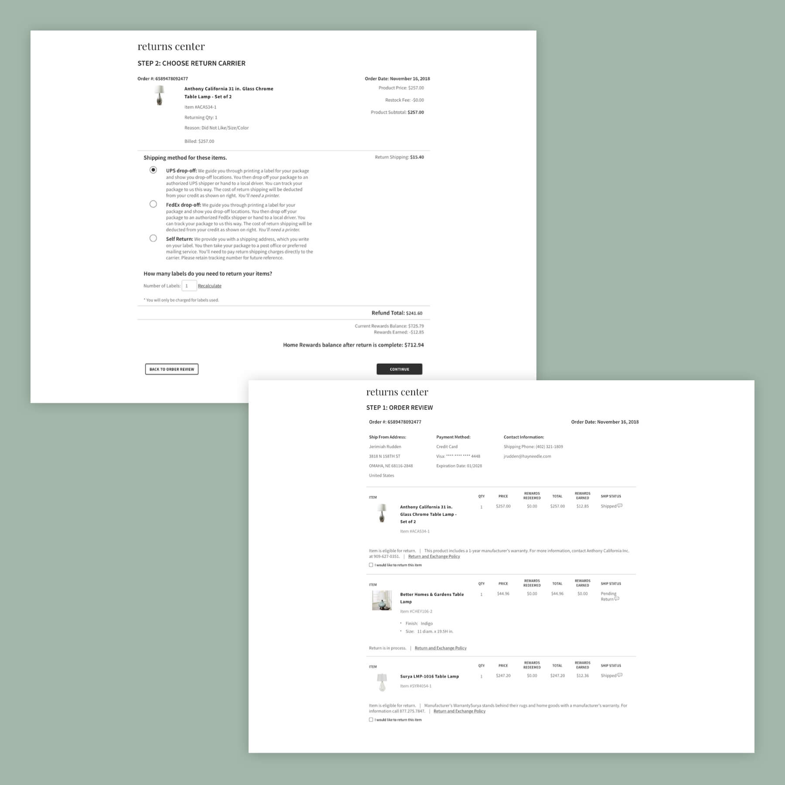
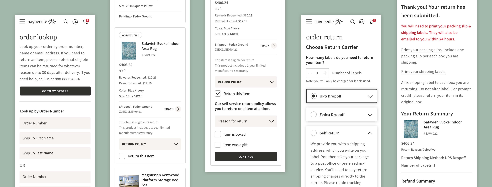

Hayneedle's orders page and returns application were being converted to a new codebase. This project covered several scenarios for different product types and all possible errors users might come across while trying to return their items. While we were unable to do a complete overhaul of the experience, we had time to update the look and make small UX improvements. We touched the customer service interface as well, which involved different requirements and more steps in the return process.

Before: Order and Returns pages
Goals
Improve usability by removing a step in the returns process and allowing customers to get necessary return information via email
Introducing clearer error messaging and stronger copy so users know the status of their return
Mobile and tablet optimization
Align UI with Checkout redesign

Challenges
I worked closely with the product manager and tech lead to make sure we were covering all scenarios. I had to document and organize requirements for specific product types and shipping information. Developers needed several on–the–fly mockups for additional situations and error states.
The Checkout designer and I also went through multiple iterations of product card design to accommodate requirements for both projects. With shifting needs and scenarios, communication was the biggest key in all aspects of this project.
Learnings
After working with developers on this project, I have a better understanding of how React components work to share data points and maintain consistency across the site. In hindsight, I would like the opportunity to go back and overhaul the returns experience to pare down the return steps to make it even simpler for the user.